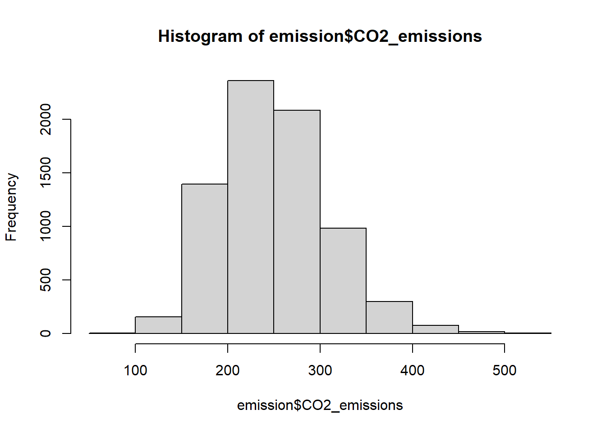
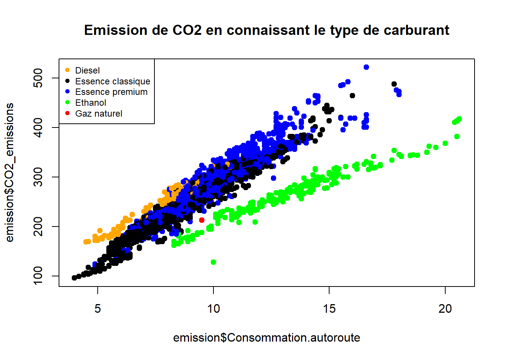
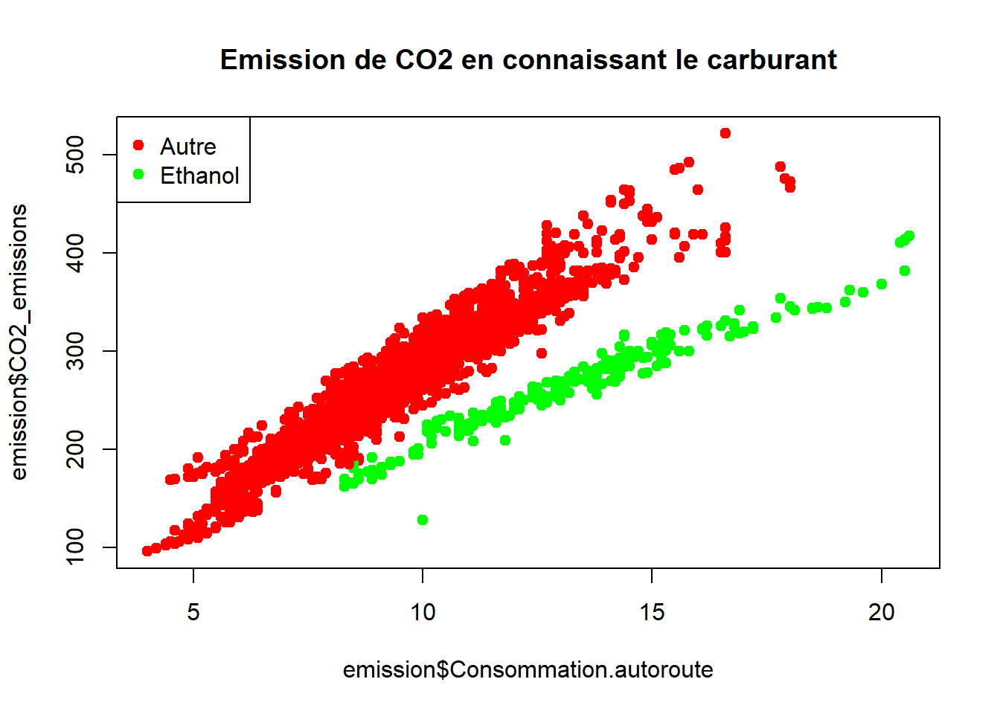
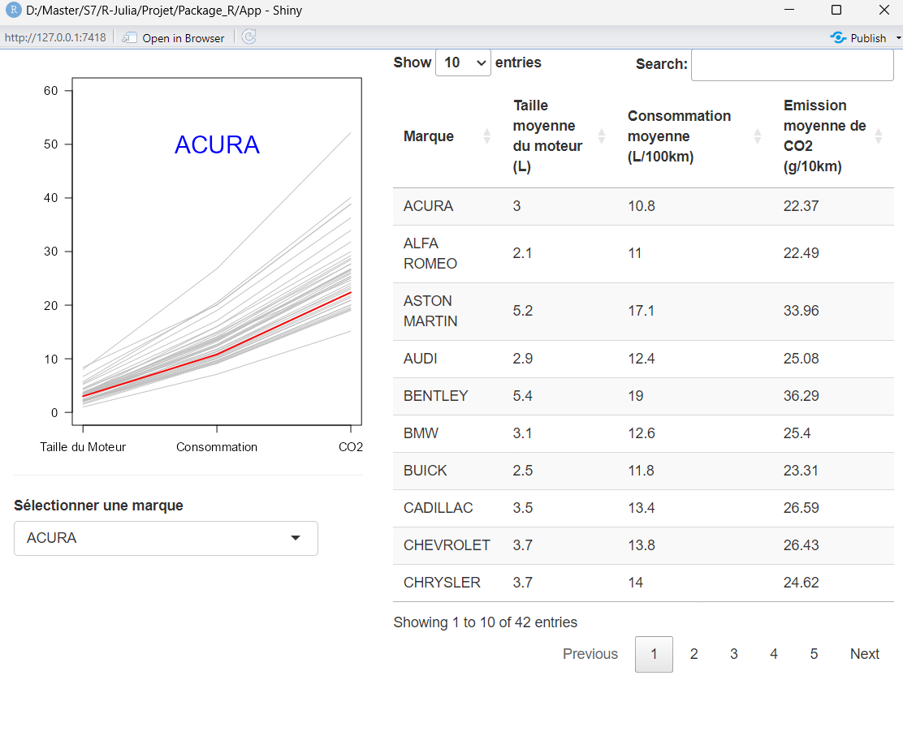
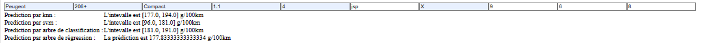
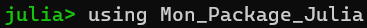
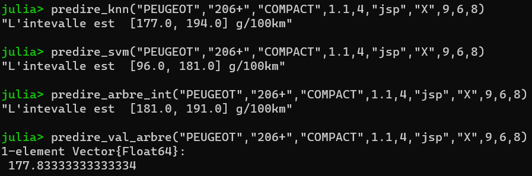

emission <-read.csv("CO2 Emissions_Canada.csv")Projet R/Julia
Description du projet
Mon projet est un projet d’apprentissage supervisé, dont le but est de prédire le taux d’émission d’une voiture en fonction de ses caractéristiques.
Le choix d’un projet de machine learning vient du fait que les sciences des données sont un domaine qui m’intéresse particulièrement et dans lequel je n’avais que peu eu l’occasion de réaliser un projet assez poussé. De plus, j’avais déja repéré le jeu de données utilisé, il ne manquait plus que la bonne occasion pour l’exploiter.
J’ai décidé de le réaliser en deux parties : Une première avec R qui a pour but une analyse des données, et une deuxième avec Julia dont le but est de créer des modèles de classification. J’ai choisi d’utiliser R et RStudio pour analyser les données car ce sont les outils que je trouve les plus pratiques pour ce genre de tâches. Ensuite j’ai décider d’utiliser Julia pour réaliser les modèles car c’est un langage que je ne connaissais pas, et que je souhaitais apprendre et comparer avec Python et R, pour cette partie j’ai utiliser VSCode et jupyter Notebook afin de simplifier et clarifier mon code.
Description du jeu de données
Le jeu de données “CO2 Emission by Vehicles” est issus du site Kaggle, c’est une version compilé des données provenant du site officiel de données ouvertes du gouvernement Canadien. Il représente 7385 ainsi que leurs caractéristiques et leur taux d’émission de CO2.
J’ai choisi de travailler à partir de ce jeu de données tout d’abord car les émissions de gaz à effet de serre est un sujet qui m’intéresse. Puis, il contient des données diverses : qualitatives, quantitatives discrètes et quantitatives continues, qui seront à traiter différemment, ce qui rend le travail plus intéressant. Enfin, le jeu de données ne contient pas de valeurs manquantes, ce qui facilitera son traitement et permet une meilleure qualité des modèles.
Partie R
Pour cette partie, j’ai tout d’abord créer un package R : “Package_R”, mais en suite j’ai utilisé R en tant qu’utilisateur plutôt que programmeur, étant donné étant donné qu’il existe déja beaucoup de fonction permettant l’analyse statistique. J’ai seulement créé une fonction permettant de changé le nom des carburants afin de les rendre compréhensible s:
carburant <-function(carb){
if(carb == "X") return("Essence classique")
if(carb == "Z") return("Essence premium")
if(carb == "D") return("Diesel")
if(carb == "E") return("Ethanol")
else return("Gaz naturel")
}
for(i in 1:7385){
emission$Fuel.Type[i] <- carburant(emission$Fuel.Type[i])
}Puis j’ai créé une application Shiny afin de permettre une visualisation aisée des données, chose que je n’avais jamais fait au paravant.
Analyse statistiques
J’ai tout d’abord rendu les données exploitable en renommant les variables, en transformant les variables continues en double, les variables discrètes en integer, et en rendant factorielles les variables qualitatives.
Analyse univariée :
- Calcul des statistiques basiques (moyennes, variances, quartiles…)
- Graphiques et tables pour comprendre la distribution des variables. Les variables quantitatives continues du jeu de données suivent une loi normale, comme nous pouvons le voir ici avec le taux de CO2 émis par km.
names(emission)[names(emission)=="CO2.Emissions.g.km."]<-"CO2_emissions"
emission$CO2_emissions<-as.double(emission$CO2_emissions)
hist(emission$CO2_emissions)
- Test sur les lois : Malheuresement je n’ai pas pu réaliser de tests sur la normalité des distributions en utilisant le test de Shapiro Wilk car l’échantillon est trop grand.
Analyse mulitvariée :
- Graphiques : J’ai réalisé plusieurs graphiques en analysant plusieurs variables, me permettant notamment de voir qu’il existe deux groupes lorsqu’on regarde les émissions de CO2 en fonction de la consommation : le carburant éthanol contre les autres types de carburants.
names(emission)[names(emission)=="Fuel.Consumption.Hwy..L.100.km."]<-"Consommation.autoroute"
colors <- c("orange","black","blue", "green","red")
plot(emission$Consommation.autoroute,emission$CO2_emissions, pch=19,col = colors[factor(emission$Fuel.Type)], main = "Emission de CO2 en connaissant le type de carburant")
legend("topleft",legend = levels(factor(emission$Fuel.Type)), pch=19,col = colors, cex = 0.75)
colors <- c("red","red","red","green","red")
plot(emission$Consommation.autoroute,emission$CO2_emissions, pch=19,col = colors[factor(emission$Fuel.Type)], main = "Emission de CO2 en connaissant le carburant")
legend("topleft",legend = c("Autre","Ethanol"), pch=19,col = c("red","green"))
- Calcul de corrélation.
- Test anova entre les variables qualitatives et le taux d’émissions de CO2.
- \(\chi ^2\) d’indépendance entre les variables quantitatives et le taux d’émissions de CO2. J’ai conscience que mon analyse statistique n’est pas complète, mais le but de mon projet était surtout d’apprendre à utiliser Julia pour la science des données.
Application Shiny
library(shiny)
runApp("App") Le but premier de cette application, outre d’apprendre à créer une interface avec R Shiny, est d’avoir une idée des marques dont les voitures émettent le plus de CO2, et de voir que la taille du moteur et la consommation moyenne sont corrélés au taux de CO2 émis. J’ai donc regrouper les véhicules par marques, et calculé la taille moyenne des moteurs, la consommation moyenne, et le taux moyen d’émission de CO2 par marque. Ces données sont disponibles dans le tableau de droite, que l’on peu trier par ordre croissant et décroissant des 4 variables, et visibles sur le graphique de gauche, où l’on peut afficher en rouge la courbe d’une marque en la séléctionnant dans l’onglet juste en dessous.
Je voulais aussi intégrer les carburants, mais pour cela j’aurai du inclure tout les individus et le tableau aurait été très grand.
Partie Julia
Machine learning
Les packages
Les principaux packages que j’ai utilisé sont : * MLJ, qui permet les fonctions générales de machine learning (git, predict, transform…) * CSV, pour charger le jeu de données * DataFrames et RDatasets, pour gérer le jeu de données * JLD2 pour enregistrer mes modèles finaux * Ainsi que ceux relatifs à chaque type de modèle : DecisionTree, LIBSVM, KNNClassifier
Les modèles
J’ai choisit d’utilisé quatres types de modèles différents, dont trois de classification : Les k-plus proches voisins, une machine à vecteurs de support, un arbre de classification, et un arbre de régression. J’ai aussi voulu utiliser un naive Bayes, mais l’hypothèse de normalité et très forte et je n’ai pas pu tester la normalité des distributions de mes variables.
Pour réaliser mes modèles, j’ai d’abord découper le jeu de données en train / test afin de séléctionner les meilleurs paramètres. Pour le KNN et le SVM, j’ai centré et réduit mes données quantitatives afin de ne pas avoir de problèmes d’échelles. Pour tout les modèles sauf l’arbre de régression, j’ai transformé la variable “Emission de CO2” sous forme d’intervalles afin de pouvoir classifier. Enfin, j’ai ajouter une variable quantitative binaire, correspondant au carburant : 0 si c’est de l’éthanol, 1 sinon.
KNN :
Etant donné que le KNN ne traite que les données numériques, on ne garde que les cinq variables quantitatives (centrées et réduites) et la nouvelle variable binaire correspondant au type de carburant. J’ai essayé de faire du one hot encoding afin d’utiliser mes variables qualitatives, mais cela rajouter beaucoup de données et donc de temps de calcul pour peu de bénéfices. J’ai essayé de type de distance : Manhattan et l’euclidienne, et il s’est arrivé que la meilleur était celle de Manhattan. Avec ces paramètres, j’obtient une accuracy de 0.87, et donc un taux d’erreur de 13%, ce qui me satisfait.
SVM :
Pour le SVM, il faut utiliser que des variables quantitatives, j’ai donc utiliser du one hot encoding, mais ça a rendu le modèle moins juste. En effet, avec les variables quantitatives “one hot encodées”, j’obtiens un taux d’erreur de 0.238, alors que sans il est de 0.217, j’ai donc utilisé les mêmes variables que pour le KNN.
Arbre de classification :
Pour les arbres, les mesures de discriminations par variables ne sont pas sensibles aux problèmes d’échelles, je n’ai donc pas besoin de centrér / réduire mes données. De plus, les arbres prennet tous types de données en entrée, je peux donc utiliser tout celle de mon jeu de données. Par contre, la nouvelle variable ethanol vsles autres n’améliore pas le modèle ici, je ne l’ai donc pas utilisé dans mon modèle final, et j’obtiens une accuracy de 0.847. Les arbres permettent de connaitre l’importance des variables dans la classification, ici la consommation mixte était de loin la plus important.
Arbre de prédiction :
Ici, les variables sont les mêmes que pour l’arbre précédent, mais ici la variable séparatrice éthanol vs le reste améliore le modèle. J’ai codé des indicateurs pour me rendre compte de la justesse des valeurs prédites par l’arbre: * la distance moyenne entre la valeur prédite et la valeur réelle est 2.32. * La distance maximum est de 82.375, ce qui est assez grand. * La distance minimum est de 0, donc prédit parfaitement.
Ici aussi, la variable la plus importante est de loin la consommation mixte, ce qui ne m’étonnes pas car elle porte l’information de toutes les autres variables, la consommation mixte dépend des autres consommations, du poids de la voiture donc du type de modèle, de la taille du moteur, du type de carburant…
Les fonctions
J’ai crée des fonctions pour chaque afin de pouvoir entrée des données brutes et prédire directement le taux de CO2 émis. Celles correspondants au SVM et KNN prennent en entrée les variables quantitatives, même si celles si ne rentreront pas en compte dans la prédiction, elles peuvent donc être nulles. J’ai aussi remarqué que les variables qualitatives avaient peu d’influence sur la prédiction des arbres, ce n’est donc pas grave ne pas savoir le type de transmissions de sa voiture par exemple.
Interface avec Dash.jl
J’ai créé une interface graphique avec Dash.jl, elle se veut sobre car le plus important ici est la prédiction des données.  J’ai aussi ajouter un graphique contenant le taux d’émission de CO2 des véhicules en mettant en valeur les types de carburant. Au début je voulais faire en sorte que le véhicule prédit apparaissent dans le graphique mais je n’ai pas réussi à faire apparaitre ce point. Je pense aussi que j’aurai du gérer les noms de carburants pour faciliter l’entrée des données. Le principal pour moi a été d’apprendre à utiliser Dash.jl.
Création de package avec github
J’ai créé deux packages avec github, un ne contentant que le package julia, afin de faciliter l’importation de ce dernier dans julia, et un contenant tout le projet. Voici un exemple de comment utiliser mon package :  
Problèmes rencontrés :
Au cours de ce porjet, j’ai rencontré peu de soucis, juste lorsque j’ai commencé à utiliser Julia, j’ai eu un problème avec l’importation de package, que j’ai résolu en supprimant Julia, défragmentant mon disque dur, et en réinstallant tout.
Conclusion :
Points forts
J’ai réussi à créer quatres modèles assez fiables, et surtout j’ai utilisé de nouveaux outils (Julia et R Shiny), que je pense avoir rapidement pris en main.
Points faibles
Je pense que j’aurai pu coupler Julia et R. De plus, à travers ce projet je n’ai pas réussi à utiliser tous ce que l’on a vu en cours (environnement, dispatching…).
Limites:
Le jeu de données provenant du Canada, je ne suis pas sure que mes modèles prédisent correctement le taux d’émissions de CO2 de véhicules français par exemple, même si nous avons vu que les données les plus importantes étaient celles relatives à la consommation des véhicules.